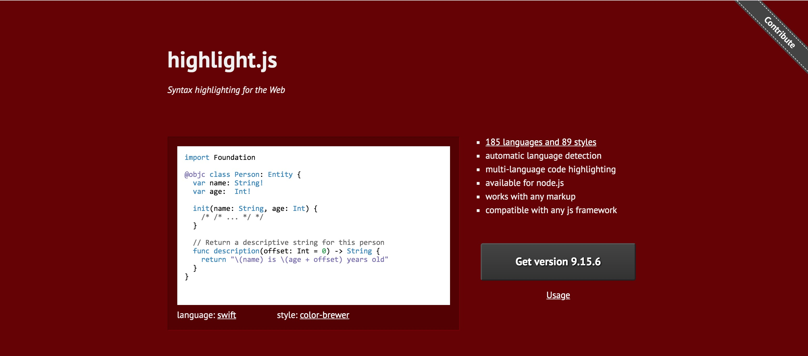
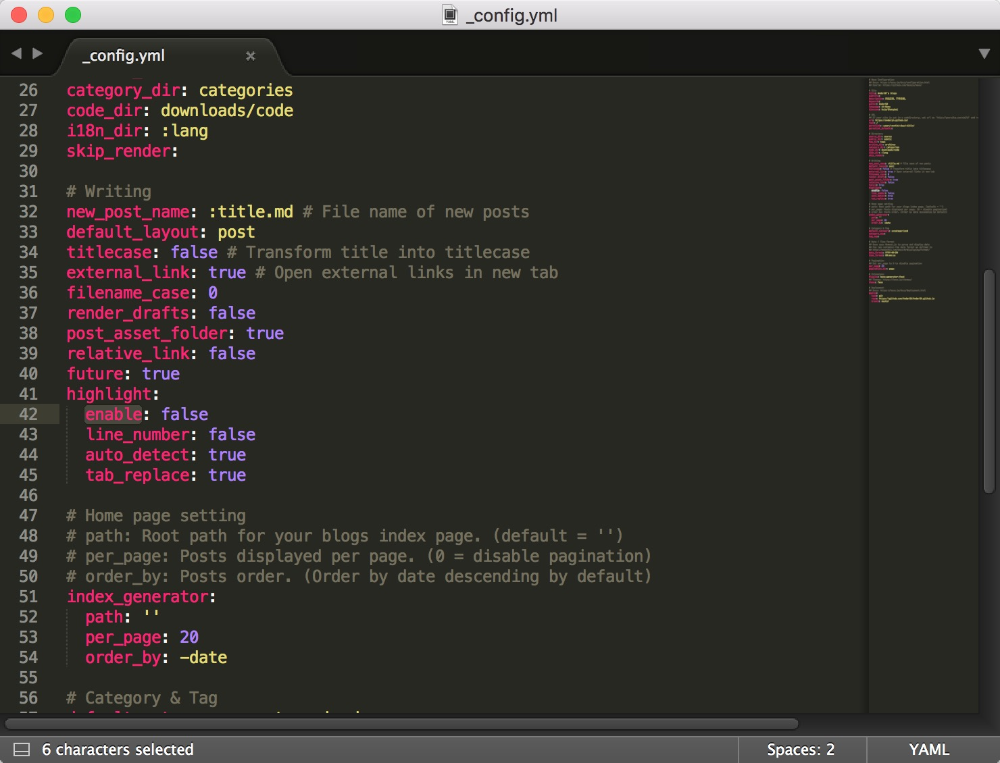

代码高亮
本文最后更新于：8 个月前
我的博客用的是fexo的主题，其中代码部分的显示效果一般，为了解决博文中代码部分高亮的问题，我准备集成highlight.js的开源工具，官网地址：https://highlightjs.org/

一、highlight.js集成
highlight.js的集成非常简单，而且目前已经支持了非常多的语言支持和样式。
1、方法选择
点击首页的Get Version按钮，可以看大官网提供了很多集成方式
- Hosted：直接集成官网提供的网络版本，有cdnjs、jsdelivr两种缓存模式
- Custom package：选择所需要支持的语言对应的版本，下载后使用源码集成，一般我们直接下载Common的即可满足大部分面向对象的语言
- Node.js：使用Node.js的npm工具集成
- Source：github下载源码集成
我采用了第二种，选中我需要的语言支持，下载package压缩包集成
2、集成过程
- 首先关闭
hexo博客自带的代码高亮，修改博客根目录下_config.yml配置文件，设置highlight选项为false

由于是修改的hexo的配置文件，所以需要执行clean命令行方法
1 | |
将压缩包解压后得到的
highlight文件夹放入fexo的主题的目录下，我是和其他css、js资源文件放在了一起找到
fexo主题注入js和css文件的地方，将官网提供的源码写入即可
1 | |
此处我使用的是官网提供的xcode.css的样式，此时调试即可查看到代码高亮以及背景的效果了。
二、个性化
在下载的所有的css样式中，我所有的样式都试过了一遍，没有什么特别喜欢的，所以我准备仿照提供的样式文件，自己写一个样式。
1 | |
我拷贝一份xcode.css文件，另外存放一个目录，通过浏览器不断调试样式，修改到了最终的结果，集成后感到比较满意
三、行号
highlight.js使用起来非常简单，但是有个问题，不支持行号显示，网上有一些人在highlight.js基础上个性化了一些版本，可以支持行号，由于我本身不喜欢行号，所以没有集成，感兴趣的推荐进一步集成highlightjs-line-numbers.js框架，地址：https://github.com/wcoder/highlightjs-line-numbers.js
四、其他优化
在完成highlight.js的集成后，我对fexo自带的<code>标签以及<a>标签的颜色也想进行个性化。
- 首先，我仍然是使用开放的个性化配置文件进行样式覆盖，
fexo主题已提供了个性化样式的入口personal-style.css
1 | |
通过重写属性，使用<style>标签提高优先级，覆盖原属性，达到了我想要的效果
但是仍然存在一个问题，当
<code>标签和<a>标签同时使用时，<code>标签中的颜色会把<a>覆盖通过浏览器调试，发现
<code>标签自带了一个颜色，层级比<a>高，所以无法通过重写样式属性的方式修改，必须要修改源码首先我分析了
fexo主题样式部分的代码，发现其所有样式都是通过多个scss编译成一个css的
关于
scss，感兴趣的可以看下官网文档，地址：http://sass.bootcss.com/docs/sass-reference/- 通过浏览器修改样式标签，我修改了
fexo的源码，最终得到了我想要的效果
其中https://ninghao.net/blog/4790此博客的文章给我提供了方法
五、附录
使用浏览器修改scss样式的方法截图如下